Past and Present in
Fascinating and Mysterious Land of
Ukraine
| 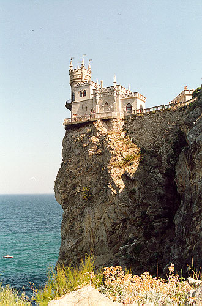 |
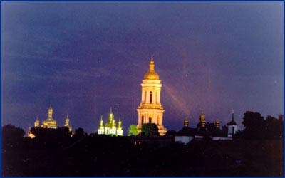 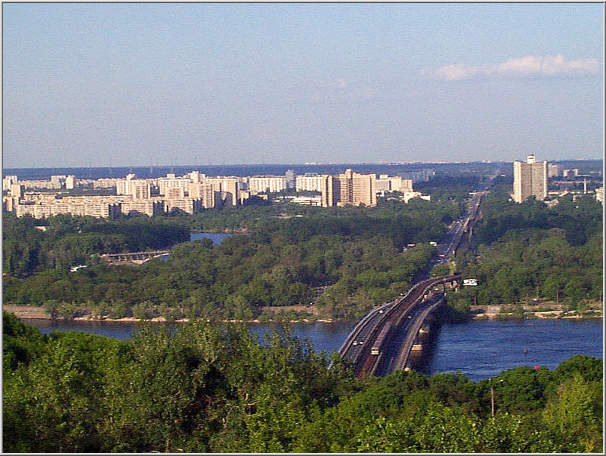 |
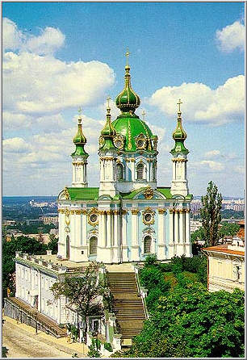 |
From the base of the Carpathian mountains in the heart of Europe to the Continental eastern steppe areas and to the sub-tropical Black Sea coast lies one of the most fascinating and mysterious places on Earth, Ukraine.
The area of present-day Ukraine has been populated since at least the Lower Paleolithic Era 300,000 years ago, associated with the Neanderthals. Owing to their favourable geographical position, there were many continuously habitated settlements in Ukraine during the Upper Palaeolithic period (30 -23 millennia BC). Among others, in the middle Dnipro River basin in Ukraine there existed an upper paleolithic culture, dated between 26,000 and 12,500 B.P., and known as the Kostenki-Avdeevo Culture, considered by many scholars as ancestral to Clovis . One of the oldest houses in the world, dated back 15,000 years, and one of the oldest maps in the world, dated back about 10,000 years, were found on the territory of Ukraine. Pieces of jewelry dated back 20,000 years found in Mezin, Ukraine. The pattern is similar, but predates the Greek "meander" pattern ("maze"). Patterns similar to those found in Ukraine were also used later by the Celtic tribes. According to Herodotus, the Scythians of Ukraine were using soap well before it became known to the rest of Europe. The horses are conventionally thought to have been domesticated in Asia sometime after 3,000 B.C. It is known however, that the first horsemen rode the Ukrainian steppe about 6000 years ago.
Ukraine is the homeland of one of the most ancient world civilizations, the Trypillian Civilization, which flourished on its territory about 7,000 years ago. The Trypillians people of Ukraine created the first highly sophisticated civilization on its territory followed by others, including Scythians who started arriving to Ukraine in the 1st millennium BC. People of Ukraine were well known to traders of the ancient world, including the Greeks and the Romans who were eager to establish trading outposts at the lucrative lands of Ukraine. Nature has been generous to Ukraine, bringing newcomers to its territory and attracting numerous foreign invaders from ancient past to most recent times. It is a country with a long, turbulent, and colorful history.
40,000-10,000 B.P. (before the present): Early Cultures in Ukraine during the
Old Stone Ages
The period known as the Old Stone Ages is the earliest period of human
development and the longest phase of mankind’s history. It is approximately
coextensive with the Pleistocene geologic epoch that started about 2 million
years ago and ended in various places between 40,000 and 10,000 years ago. In
the middle of the Dnipro River basin in Ukraine there existed an upper paleolithic
culture, dated between 26,000 and 12,500 B.P., and known as the
Kostenki-Avdeevo Culture. This culture considered by many scholars as a
culture which may potentially be ancestral to Clovis in the New World, the
earliest well-established human culture in the American continent. The
Paleolithic (Old Stone Age)
period of the Stone Ages followed by Epipalaeolithic, Mesolithic (Middle Stone Age), Neolithic (Late Stone Age),
Chalcolithic/Eneolithic (Copper Age) periods. A number of pre-historic
settlements in Ukraine suggest their continuous habitation from the glacial
maximum (more than 17 millennia ago) to at least the Mesolithic period.
Some of most well-known settlements include the Molodova settlement, located
on the right bank of the Dnistro River in the Chernivtsi Province of Ukraine,
the Amvrosiyivka settlement in Donbass, the Klinets in the Zhytomyrska
Province, the Propiatin settlement near Ternopil at the midcourse of Dnipro's
left tributary Seret. Due to the Kyrillivska finding on the right bank of
Dnipro River, it is known that the present-day Kiev was inhabited already at
that time.
20,000-13,000 B.P.:
Mezin prehistoric findings, ornaments that predate Greek patterns
A
number of settlements were present in Ukraine during that time. One of the
best known and richest in prehistoric artifacts is the Palaeolithic settlement
in Mezin, on the right bank of the Desna River in Ukraine. Found at that
settlement jewellery such as pendants, necklaces, bracelets and headbands are
truly amazing. Researchers believe that a most unique example is an
elaborately created and lavishly ornamented about 5 cm wide bracelet. Other
bracelets have a magnificent design element of which can still be found in
the embroidery of Ukrainian costumes. The design is reminiscent of, but
predates, the famous Greek meander (“maze”) pattern.
15,200-13,000 B.P.: Mezhirich findings, the world oldest map and musical instruments
Some of the first human houses found in the Mezhirich settlement, near Kiev in Ukraine. The mammoth bones were used to create the foundations and frameworks of houses. In the fertile valleys of Ukraine such bone houses have been found in considerable numbers, often clustered together in little villages. An old map, inscribed on a mammoth tusk, and showing a river and dwellings along the river is also from the Mezhirich settlement. Musical instruments, amber ornaments and fossil shells, transported an estimated 350 to 500 kilometers from their source, were all found on the territory of present-day Ukraine.
5,400-1,800 BC:
Trypillian Civilization in the context of most advanced Neolithic cultures
Ukraine is the homeland of one of the most ancient civilizations, the
Trypillian Civilization, which flourished on its territory about 7,000
years ago. To put it into context, recall that we are now living in the
geologic time period known as the Holocene. This epoch,
which began only about 11,000 years ago, came after the Pleistocene
epoch. The later period started about 2-1.8 million years ago and its
end indicated the last glacial period (or the last Ice Age) on the
Earth. Trypillian Civilization is an archeological name for the
Mesolithic/Early Neolithic culture that existed on the territory of
present-day Ukraine since about 5400 BC. According to scholars, the
largest Trypillian cities that existed over six thousand years ago are
described as "hundreds of hectares in area, thousands of dwellings, and
a population estimated at 10,000-15,000 people. The strong
fortification, which was made of hundreds of two and even three-story
buildings densely attached one to the other, protected the inhabitants.
The population of these cities was engaged primarily in agriculture,
although there were also craftsmen such as potters, blacksmiths, and
weavers". Evidence of pottery during the Early Neolithic
period is usually associated with the rise of agriculture and sedentary
living. The Trypilia plastic arts, namely portraits, are unique
masterpieces. Some other features of the Trypilian Civilization are the
appearance and the use of writing. A developed sign system, created by the Trypilians, was the step to the creation of writing. Some from more
than 300 signs are similar to Sumerian such as "star", "plant",
"house". Trypilians used clay tokens - similar to those used in
Mesopotamia. The Trypilian settlements grew in the areas often in
access of 400 hectares with large houses more than one story high -
there was nothing similar to be found anywhere else in Europe. In the
ancient Egypt it was the Predynastic period. Similar to the Trypilian
Civilization, from the Chalcolithic period (Copper Age) - beginning
about 4000 BC - Egyptians apparently utilized an extended part of the
land. Pottery, found in the Upper Egyptian tombs from the 4th
millennium BC, was known to the Trypilian people at that time. Other
known Early Neolithic cultures include the Hemudu culture (5000-4500
BC) in Zhejiang Province and Yangshao culture in North Central China.
During the same time, many regions in Europe experienced essential
environmental effects after the last Ice Age ended, prolonging
the Mesolithic transitional (between the Palaeolithic and Neolithic)
period in those areas. Such conditions delayed the coming of the
Neolithic period in many parts of Europe, and until as late as 4000 BC
in Northern Europe. The Trypilia culture extended from the lands east of
the Dnipro river near present-day Kiev through the southwest steppe areas of
Ukraine, and to an area just southwest the Siret river, in present-day Romania.
The Trypillian culture is named after the small village of
Trypillia (south of Kiev) has yielded evidence of copper technology and a
distinctive pottery painted with vigorous wavelike patterns in black and
white. During the Neolithic
period of 5000-1800 B.C. the sophisticated Trypilian culture was the most advanced in all of Europe and
influenced the early Greek and Aegean civilisations.
1000 BC - 400 BC: Ukraine on the western edge of the Eurasia plain
Millenniums later after the Trypillian culture was in its peak, other identifiable groups began to
appear on the territory of present-day Ukraine. Recall that after
the Stone Ages, the human civilization passed
the Bronze Ages (in the British classification it is around 2200-800BC) and
the Iron Ages (usually 800-450BC and in the British classification sometimes
up until 400AD to include the prosper of the Roman Empire from 1AD to 4AD).
This was followed by the Middle Ages (500AD-1517, from weakening the Roman
Empire around 400AD up until the beginning of the Renaissance), the topic well
elucidated in the Western literature.
During the Bronze, the
Iron and the Middle Ages, there were numerous nomadic incursions into the
steppe regions of Ukraine before the rise of the Antes civilization on the
territory of present-day Ukraine. Over its history, many were attracted by the
fertile lands of Ukraine.
This ancient land remembers many civilizations and while many promoted
the cultural enrichment, others brought wars and devastations on its territory.
The location of Ukraine on the western edge of the vast Eurasian steppe, the
largest expanse of flatland on earth, meant that Ukraine would become a
part of Eurasian nomadic life. Nomadic pastoralists, including those from the
east and the west, appeared early in the Ukrainian steppes. Cimmerians, Scythians, Taurians, Sarmatians,
Goths, Greek city-states of the northern Black Sea coastal area and the Crimea
left a notable trace in the history of Ukraine. Some researchers admit
that there is a great deal of confusion with regard to the names of the
various peoples who appeared in the steppe country north of the Black Sea from
the day of the Cimmerians (1000-700 BC). One of the reasons is that some
researchers argue that Cimmerians were native to Ukraine. In his Odyssey,
Homer referred to the northern Black Sea shore of present-day Ukraine as
"the land of Cimmerians". To put it into a historic context, around that
time, probably between
900 and 800 BC, the Italian peninsula was settled by the first sedentary
people prior to Romans, the Etruscans, and later in 753 BC Rome was founded by
Romulus. As the Greek mainland had become overpopulated by about 1000BC, a
number of city-states sprung in the northern Black Sea shore of present-day
Ukraine in the late 7th and early 6th centuries BC. The other major part
of population were Scythians described by the Greek "father of history"
Herodotus who visited the land of present-day Ukraine.
Scythians became noticeable in Ukraine around 800 BC as they superseded from Black Sea coast
Cimmerians, and had created several empires, the first one is dated back
to the 8th - 7th c. BD. It is known that on the right bank of the Dnipro
river lived an agricultural people, also known as Scythians, as described by
Herodotus. The Ukrainians themselves can be traced to the Neolithic
agricultural tribes in the
Dnipro and Dnister valleys who created one of the
most advanced Civilizations at the time, the Trypilian Civilization. As
believed by some scholars, the agricultural people, described by Herodotus at
the Scythian period of Ukraine, could be direct ancestors of the proto-Slavs.
The Scythians of Ukraine came into trade contacts with Greek culture via
city-states of the northern Black Sea coastal area and the Crimea. Along with
trade contacts, the Mediterranean world brought a war to Ukraine when the
Persian king Darius invaded the country in 513 BC, but was defeated. The
people represented a strong power which was sufficient to repel an
invasion by the Persian king. After that the 2nd empire was created in
the 4-th century B.D. Ukraine. This was the period
of board of king Atej which marked epoch of the best cultural rise. Well
before the Romans
became aware of soap as a cleanser (around 2nd century A.D.)
the Scythians of Ukraine were using soap probably as early as the 7th century B.C. to wash their hair
as mentioned by Herodotus.
400 BC - 400 AD: Scythians of Ukraine, Invasion of the Goths, and the Antes State
At least two states are known on the territory of present-day Ukraine during this time, the 3rd Scythians empire and the Antes. Gelonus, at the northern edge of Ukrainian steppes, that was once the capital of the empire, was well described by Herodotus in the 5th -4th centuries BC. Interesting artifacts were also found in Ryzhanovka kurgan, about 100 km south of Kiev. They are dated back to 250-225 BC. Herodotus describes much of what is the present-day Ukraine as "the Greater Scythia". The third Scythians empire, created in Ukraine in the 3-rd c. BD, had its centre in Crimea. Its economy was based on export of bread to Greece. The Crimean Scythian state extended from the lower Dnipro river to the Crimea with Scythian Neapol as their capital city (near present day Simferopol in Ukraine). This formation of the state was strongly suffered from invasions of Sarmatians and Goths tribes. The rise of Macedonia has also contributed greatly to the fall of the Scythian empires, in particular to the 2nd empire. After the defeat of the Persian king, the Scythians expanded their influence to Thrace (in the late 5th and early 4th c. BC) where their interests clashed with the interests of Philip of Macedon who wanted to settle Macedonian towns along the routes as far north as the Danube. In the spring of 339 AD, the Macedonians clashed with the Scythians near Danube where the latter were defeated. It is after this battle, on the way home Philip suffered a severe injury which left him permanently lame and all the booty was lost due to a Thracian Triballians' attack. In 343 BC Pilip hired Aristotel for 3 years as the teacher for his son, known later to the history as Alexander the Great. In 338 BC in the battle of Chaeronea the Greek city-states were decisively defeated and submitted to Macedonia, while in 334 BC the Persian Empire suffered a major defeat in the battle of the Ganicus River. During the Alexander the Great reign, Macedonia held sway not only Greece and Egypt, but practically all of the Middle East and parts of western India. In Ukraine, the 3rd Scythian empire created the 3rd c. BD was coming to an end. Scythians were overrun by Sarmatians and only a small group of Sythians remained in Crimea. The Scythian Neapol was destroyed much later, in the 5th century AD, by the Goths. Culturally, Scytho-Sarmatians left a noticeable trace not only in the history of Ukraine, but also in the history of other European nations. Images from Scytho-Sarmatian mythology could be found later in the Celts, the Goths, and the Scandinavians. The Goths, who probably originated in southern Scandinavia, had poor lands and on the edge of the new era numerous overpopulated tribes started migrating south. These Germanic tribes initially inhabited lands in northern Europe, in Scandinavia, Low Countries and Jutland, and started their invasions southward from the Baltic Sea. At around 200 BC the Goths invaded Rhineland where the Celts lived and defeated them. Although the Roman Empire at that time just finished the Second Punic War, the danger coming from the north was noticed. The first conflict between Romans and Germanic armies happened in the 2nd century BC in Dacia. With a number of battles over the coming years, Caesar defeated Germans in 58 BC during the Gallic Wars at the battle of Vosges. He moved his troops to Britain in 55-54BC. The Roman Empire continued to expand and the Celts, who spread from their homeland in Central Europe, lost their last stronghold on the continent, Gaul, in 52 BC to the legions of Julius Caesar. Despite their earlier defeats, in the 1 c. AD a leader of the tribe of Marcomannes, established a big alliance of different Germanic tribes against all those who prevented the Germanic move south. In the 1st century AD the number of settlements within archaeological cultures in Ukraine grew very rapidly. Ukraine in the 1 c. AD had three distinct types of societies inhabiting three different geographic zones: north and northwestern plans, the middle steppe, and the Black Sea coast on the south. In the northern and northwestern wooded plains lived the agriculturalists, the oldest inhabitants of the land who were military weak. The only way to expand for them was to the south in Ukraine, given good trading relations with the Scythians of Ukraine and the fact that to the west there were very aggressive and numerous Germanic tribes, and to the east there was just a vast swampy wood region inhabited by Finnish hunters. However, this integration of Ukrainian lands did not happen as the Goths, a Germanic tribe, invaded Ukraine in about 2nd century AD. The Duleby people of Volhynian and Podolian territories of Ukraine had to migrate towards the northern shores of the Black Sea as a result of the Gothic invasion from the north at the end of the 3rd century AD. The Goths called the Ukrainian lands Oium, meaning "in the waterlands" as most of the Ukrainian population lived in rich fertile lands along the rivers. With annexed lands from the Ukrainian population, the Ostrogoths developed an empire that contributed greatly to the fall of the Roman Empire. Further to the West, the Goths, the Vandals and others presented also an increasing threat to the Roman empire, and the Roman army of Valens was eventually defeated by the Goths at Adrianople in 378 AD. This happened at the time of severe clashes between the Goths and the Antes in Ukraine. After several victories in the East and the West, the Vandals and other barbarian tribes crossed the Rhine in 406 AD and barbarian settlement began to expand over much of Europe. Europe, from Ukraine to Spain, became the playground of these ferocious tribes. The Vandal warriors established a kingdom in North Africa as their base for raiding the Mediterranean Sea.. The peoples of Ukraine with their neighbours created the Antes state (mentioned by many Byzantine writes) not later than in the 4th c. AD., but this was not enough to stop Germanic tribes expanding to the southeast and west. The battle at Adrianople was lost by Valens (who was the Roman Eastern emperor at that time) to the Goths in 378 A.D., while approximately at the same time (between 375-385 A.D.) the Antes prince, Bosh (Boz), was defeated by Vinitarius, the leader of Goths and the first barbarian to cease Rome. This happened on the Dnipro River, near present-day Kiev. The big movement of people began. As the Wikipedia Encyclopedia put it, during this period, Ukraine served as a super highway for the migration for peoples from Asia into Europe. The year 375 AD is often associated in the history of the Roman empire as the beginning of the Great Movement.
400 AD - 600 AD: The Antes State - between East and West
The
invasions of the Huns, however, precluded the Germanic tribes from
establishing a real rule over the Antes. Appearing from beyond the Volga River
and moving from Mongol steppes some years after the middle of the 4th
century, the nomadic Hunnu (known in Europe as Hunns) invaded Ukraine, quickly overthrew the empire of the
Goths between the Don and the Dniester. They were determined to move to the
West. During the next seven decades
they built up an enormous empire there and in central Europe.
Millions of people left their lands and ran away from
the wave of terror.
Many
people moved from Ukraine to the southwest, including the Balkans and
other parts of the Byzantine empire. At the same time,
Hunns defeated Goths near the Lower Danube
(probably in the same 375 A.D.) and the latter had no choice but to
retreat from the Eastern Europe further to the West, on the territory of the
Roman Empire. At the same time, in the Eastern Europe, the
Ostrogoths (the eastern division of the Goths that had split into western and
eastern kingdoms), who created a large kingdom under their leader
Ermanarich, were attacked and soon overrun by the Huns. The Germanic
barbarians completed their migrations into the West in the period between 406
AD and 572 AD.
Before
the beginning of their recorded European history, a tribe, possibly related to
the Hunns, was known in western China as the Xiongnu (Hsiung-nu),
during the Earlier Han Dynasty (206 BC - AD 8). The Huns were founding
strongholds all over the land and were preparing for a jump into Western
Europe, while Ukraine, once again in its history, became a borderland between
the East and the West. The Hunns were making repeated incursions into the Roman Empire
during the 4th and 5th centuries ad. These attacks culminated in a series of
wars under Attila, the most renowned of its leaders, that brought both parts
of the Roman Empire, East and West, to the verge of collapse.
The Ostrogoths were put into the army of the victorious
Huns, and they did not regain their freedom until 453, with the death
of Attila who succeeded in his scythian campaign in 433 AD. In 451 the
Huns invaded Gaul and in 452 they invaded Italy. This was a
very turbulent period in the history of Europe.
After Attila's death in 453, however, the power of the Huns
was broken. Soon after that, the Ostrogoths reminded Europe about themselves
as under Theodoric the Great they bagan to move again, first to Moesia, and
then to Italy.
At approximately the same time, the Gothic leader Euric
presented an increasing thread to the Roman empiry. In 474 he broke the treaty
(the foedus), conquered all Gaul by 475 AD, and destroyed the city
of Tarraco a year later, which demonstrated Rome's increasing difficulty in
maintaining an imperial power. In the same year (476), Odoacer, a mercenary in
the service of Roma, leader of the Germanic soldiers in the Roman army,
deposes the western Roman emperor, Romulus Augustulus, and thereby
terminates the western Roman empire. The last capital of Scythians of
Ukraine, Scythian Neapol (located near city of Simferopol) was destroyed by
the Goths in the 5th century AD. Recall also that it was as early as in
324 AD when Constantine the Great transferred the seat of the Roman Empire to
the city of Byzantium, which he renamed Constantinople, a move that changed
the history for many years to come. It was him who endorsed Christianity as
the official religion of the (Byzantium or Eastern Roman) empire. In the year of 482 A.D. the Christian emperor,
Justinian, was born, whose reign of 527-565 AD. In 535 AD he declared war on
the Ostrogoths, the war that continued for almost 20 years and led to the
disappearance of the Ostrogoths as an ethnic identity. Ukrainian
lands, however, immediately attracted new invaders. This time they were
coming from the East. Recall that by 554 Rome was reduced to a camp of about
30,000 people, while Constantinople has about one million people.
New
treats to fertile lands of Ukraine did not make themselves to wait.
In the first half of the 6th century the Avars came to Ukraine. At around 557
AD,
the Avars attacked the Antes and defeated them. Continuous wars with the Avars weakened the
Antes and led to
the decline of their state in the 7th century. At that
time Khazars emerged as a force and rose to great power. Living at first
in the region of the Caucasus Mountains and the Caspian Sea they invaded
Ukrained and at the height of their power they controlled a vast territory of
Ukraine from the northern shore of the Black Sea to as far as west of the
Dnipro river. The need
of an alliance between the peoples of Ukraine, Volynyans, Polyans, and others,
in the face of continuous invasions was obvious.
600 AD - 900 AD: Sharpening the Ukrainian identity and creating prerequisites for Kievan Rus
The Ukrainian national identity goes back to the Trypillian culture which flourished in Ukraine about 7,000 years ago. Ukrainian cities have long history. The area of modern day Kiev, as well as many other Ukrainian cities, has been settled by people for many centuries. The legend says that Kiev, the capital of present-day Ukraine, was founded on the last weekend in Spring of the year 482 A.D., although it is clear that the earliest inhabitants of the area can be traced back at least to the ages of Trypillian Civilization of the Neolithic period (5400-1800 B.C.). Excavations continue to uncover many artifacts from settlements dating from the Copper, Bronze, and Iron ages. The ancient chronicles and legends speak of three Slavik Polianian princes (Kyi, Shchek, and Khoriv) who founded the settlements on the hills overlooking the Dnipro River. Kyi, their elder brother, is especially mentioned in many legends and his name lives on in the name of the city, Kyiv. As we mentioned above, Kyiv with the settlements around it that go back to the Trypillian culture, has an even longer history. It is known, for example, that the Apostle Andrew, St Peter's brother, was the first to bring news of Christian faith to the Ukrainian lands as early as the 1st century AD (around AD 60/70). St Andrew first arrived to the Crimea from where he proceeded along the Dnipro river and was fascinated by the spectacular location of the hilly shores of the Dnipro river where now modern city of Kiev stands. He erected a cross on the site where the Church of St Andrew is currently located. Many other Ukrainian cities have equally long and colourful history. Among others, the history of southern Ukrainian cities such as Feodosia, Kirkinitida (destroyed by the Goths), Chersoneses (modern Sevastopol), Evpatoria and many others goes back to the Ancient Greece time. When St. Andrew came to Ukraine in the 1st c. AD, those days Ukraine had three distinct geographical zones with different types of societies. Around that time other Slavic tribes appeared to differentiate themselves from the others. The so-called autochthonic theories claim that some of the Slavs had lived north of the Carpathian Mountains well before 1000 BC. It is clear that during the movement of the Goths to extend their lands to the agriculturally rich areas of Europe, including Ukraine, the Slavik identity had sharpened. The people needed to differentiate themselves from the invaders, hence the word "Slav" which in the Old Slavonic language means "word, talk" (slovo) to indicate people who understand each other in contrast to the Goths whom they called "dumb, speechless people" (nimi, nimtsi). The common root word "slava" means "glory" or "praise". In the wake of foreign invasions, a number of Slavik states appeared at that time, e.g. Karantania (in today's Austia and Slovenia), the Bulgarian first empire (681AD), Great Moravia, and others. The English as an ethnic group can also trace their heritage back to around that time as they sharpened their identity from the Germanic (Anglo-Saxons) tribes who came to occupy most of lowerland Britain by the 7th Century AD. In the late 6th and early 7th century the first fortification appeared in the northern section of Old Kiev Hill. Eventually, while the court of the princes was located in the hills of Kiev, the lower part of the city, known as Podil, developed into a busy trading district. In the battles agains Huns in the 5th centuries other European nations appeared on the scene. Norsemen of Scandinavia grew into a fearful force in Europe. Among others, the Danish tribes under their leader Frode faced the Huns in 430 AD. Later, in 515 AD they attacked the Frankish empire. Over the coming years they raided English, French, Slavik, and Spanish territories. Most historians believe that the violent Viking Age begins when in June 793 AD Norsemen plunder the monastery on the Island of Lindisfarne, off the east coast of England, killing many of the monks there and enslaving others. The assault shocked Europe. In 810AD Danish Vikings attacked the Frisian (the Netherlands) coast, then part of Charlemagne's Frankish empire. In 830 AD Norwegians established themselves in Ireland. That angered Danes and led to a subsequent wars. While Danes and Norwegians raided to the West, the Swedes made a number of raids to the South and East. Sweden was first mentioned by Roman historian Tacius in the 1st c AD. Trade exposed the Scandinavians to the wealth of other nations and fed dreams of plunder and conquest. The oldest town in Scandinavia, Birka in Sweden, was founded late in the 8th century (around 860 AD), followed by other towns such as Ribe in Denmark in the 9th century. Unlike in their homeland, Swedes who came to Ukraine in the 9th century, saw already well developed cities. They were coming to a rich and immense country. Apart from Kiev, many Ukrainian cities have thousands years history and cities such as Rivne were built at least in the 2-3 century AD or earlier. Since their inhabitants were mainly agricultural people those cities, however, were very vulnerable to foreign invasions and the timing of Swedes' arrival to Ukraine coincided with frequent attacks of Khazars who continued devastating the Ukrainian territory. As it was in other parts of Europe, the Scandinavians in Ukraine were largely employed as hired warriors. Already in the 5th century Kyiv grew as an important trading post and the formation of Kiev Rus dates back to the 6th century. With the arrival of the Varyags (Vikings) to the Ukrainian lands about two centuries later this state was strenghen. Well before the Swedes came to Ukraine, the inhabitants of Kiev Rus were called "rusyny" - a designation that remained in use in some parts of Ukraine until recent times. There was no a Swedish tribe with a similar name and the main reason for some historians' claim that the word Rus has Scandinavian origin is that the Finns called the Swedish Ruotsi. However, it is well known that well before the Varangian route to the Bizantines had been established, the name of present day Ukraine was referred as Ros and it was mentioned, for example, in connection with the Hunnic attack of 434-437AD, before the Huns invaded Italy in 452. The land of the Polianians around Kiev was bounded by the Dnipro, Irpin, and Ros rivers and the latter, originated from the Old Slavik word "rosy" (morning dew), lend the name to the people inhabiting the land from prehistoric times. Like the locals, the Swedes who arrived to Ukraine and became inhabitants of the Kiev Rus were also called "rosy", "rusyny". They helped to free Ukrainian lands from Khazars and that created conditions for the establishment on the territory of the present day Ukraine the most powerful state in Europe.
800 AD - 1200 AD: Kievan Rus' - the most powerful state in Europe and its links
Ukraine was in the trade route between the Varangians and the Greek. The Varangians (Variags) were Vikings who promoted trading, piracy and mercenary militarism and who roamed the river systems and portages of Europe, reaching the Caspian Sea and Constantinople. The Varangians who travelled eastwards, arrived to Ukraine from beyond the Baltic Sea around the mid 9th century. Scandianavians gradually merged with the local population of Ukraine and were called Rusyny. Some of the most famous anscestors of Rusyn were Rurik, Askold, and Dir. Although it is often stated that Askold and Dir were Rurik's brothers, the Primary Chronicle implies that they were neither his relatives nor of noble blood. There are various theories concerning the causes of the Viking routes. It is clear that Askold and Dir were travelling to Constantinople and when they saw a settlement on a mountain near the Dnipro river, they fell in love with the city. They settled in the city and gathered a large number of fellow Varangians. Askold and Dir earned respect of the locals as they helped to strengthen the Ukrainian land and freed it from the Khazars. The new state became stronger and in 865-866 the warriors led by Askold and Dir attacked the Bizantium Empire aiming to seize Constantinople. Patriarch Photius described this attack as a "thunderbolt from heaven". According to the legend, the defenders offered up prayers to God and dipped the Honourable Robe of the Mother of God into the sea. A sudden storm drowned the fleet of the Princes of Kiev in the sea of Marmora. In view of this miracle, Askold and Dir assumed Christianity and, back in Kiev, ordered the foundation of the St Elijah Church (located by the rivers Dnipro and Pochaina), the place where Christianity was introduced to Kievites later in 988 AD by St Volodymyr (980-1015). As it was mentioned, year 793 is often considered as the beginning of the Viking Age. After 793 Vikings continued on small-scale raids across England, but in 865 a larger army led by Ivar the Boneless, Halfdan, Guthrum (and other "landless" kings) arrived to East Anglia. York was the center of the kingdom of Jorvik from around 866. By 874 the Vikings of Denmark got control of northern and eastern England. In parallel with their expansions to the British Isles, the Vikings raided the vast territory of present day Russia from as early as the 7th-8th century. For example, Ynglin Saga recounts the tale of the semi-legendary Ivar Vidfadmi (ca 650-700) who drowned on an expedition to the present day Russia, the area around Lake Ladoga. There is evidence to suggest that a Swedish settlement, Aldeigjuborg, was established around Lake Ladoga in the 8th century. Up until ca 800 the Dnipro route for the Varangians was often blocked by the Avars, who invaded frequently Ukrainian lands, the easier pickings were in the Volga basin (see e.g., H.R. Whinfrey). One of the theories suggests that the Vikings would plant crop after the winter, and go raiding as soon as the ice melted on the sea, then returned home with their loot, in time to harvest the crops. During the Viking Age they were wandering raiders and mercenaries. It should be noted that between ca 830-853 Ireland was disputed between the Norwegians and the Danes. In 853 the Danes were defeated by the Norwegian warlord Olaf. Norway was eventually united under King Harold (I) the Fairhaired of Vestfold. These disputes between the Vikings and the process of the unification of Norway, according to many historians, were contributing factors to the Vikings invasions and expansions. The bulk of the Vikings were displaced warriors who had been driven out of their lands and who had nowhere to go. Their frequent raids to the Lake Ladoga and the Volga basin led to the establishment of a union of northwestern Russian lands with the center of Novgorod in about 860 AD. The Varangians warriors could protect those lands from the Mongols and Turks and Rurik became the first prince (knyaz') of Novgorod (860-879). Rurik himself is often considered of Swedish descent, but some historians assimilate him with the Danish Rorek of Jutland. Some historians claim that he was in fact both Slav and Scandinavian. After his death in 879, Rurik was succeeded by Oleg, the oldest member in his family. It was Oleg (879-912) who moved his army to Kyiv, put Askold and Dir out of the way by an act of treachery, and made Kyiv the capital of the state known to the history as the Kievan Rus. Two main historical events followed shortly afterwards. On the one hand, the Vikings continued their raids on European cities and in 885-886 the Danes laid siege to Paris. The siege was lifted only when the French guaranteed the Vikings clear passage up the river Seine and 700 pounds of silver. On the other hand, a new growing force on the European scene emerged when in 907 Oleg reached the gates of Constantinople, the great city of the Bizantine Empire. He obliged the emperor to pay a large tribute and to agree to a treaty of the free commerce between the Kievan Rus and the Greeks. The kings that followed consolidated the Kievan Rus and the dynastic links between Ukrainian and Scandinavian rulers were maintained for a long time. Kiev prospered as the center of the powerful and prosperous state that was known to the outside world as Kievan Rus. By the 10th century, the state was the largest and most powerful state in Europe. It was a state where many nations lived in harmony so much desired in today's fragile world. The Scandinavians in the Kievan Rus were not only employed as hired warriors but also as diplomats. The texts of the 907, 911, and 944 treaties between Kievan Rus and Byzantium bear witness that among state's envoys were people with Scandinavian names. After the reign of Igor (912-945), the first princess of Kiev became Olha (945-962) who glorified her two royal predecessors by building Churches on their graves, that of St Nicholas on Askold's grave and that of St Sophia on the grave of Dir. To these days, the "Grave of Askold" is a great national monument of Ukraine, a part of the park complex on the right bank of the Dnipro River in Kiev. Olha also introduced a series of laws governing agriculture, hunting seasons and the like. She clearly insisted on a common code of laws and regulations to be accepted and obeyed by all her subjects. The widespread personal serfdom characteristic of Western Europe states did not exist in Kievan Rus. "Olha the Wise" as she was and still is called also extended diplomatic hands westward toward Europe while enhancing trading routes into Asia. It was Olha who laid the path for her great grandson, St Yaroslav the Wise, to marry off his daughters to the Royal Houses of Europe, thereby establishing enduring connections with them. Nevertheless, the danger of attacks from antagonistic tribes, in particular the Turkic Pechenegs and the Khazars rtemained. Around 965, the prince Svaytoslav I (962-972) attacked the Khazars and captured their capital, Atil, moving this tribe to the Bosphorus coast of the present day Turkey. While the relationships between Kievan Rus and Bizantine empire were not always easy, it was during the reign of Volodymyr I when emissaries were sent from Kievan Rus abroad to report on Judaism, Christianity, and Islam before Orthodoxy was chosen for the people of Kievan Rus. During his time Kiev rapidly flourished from the trade between Constantinople and the Baltic and Scandinavia. This was Volodymyr's capital and the city to which he returned from his campaign to Chersonese in Crimea during which he was baptized. The Kievan Rus' had also dynastic links with the Byzantine world. In 988, as part of a treaty involving marriage to a Byzanine princess, Basil II's sister Anna, and ceding of some Byzantine territory, Volodymyr of Kyiv (St Volodymyr) agreed to convert to Christianity. The liturgy was kept in Slavik rather than Greek which emphasized the independence of Kievan Rus from Byzantine empire. Volodymyr, who just before that imported 6,000 warriors from Sweden to Kievan Rus, has sent them to Byzantium where they became the first Varangian Guards of the empire and Basil'sown personal bodyguards. The Varangian Guard was one of the most loyal element in the Byzantine army. Among the Varangian Guard was also the future king Harald III of Norway who arrived in Constantinople in 1035. Prince Volodymyr maintained traditionally good relationships with other Scandinavian countries. After Harold I, Norway was divided and in addition to the domestic struggles, both Denmark and Sweden were attempting to acquire Norwegian territory. The juvenile prince of Norway, Olaf Tryggvason, the nephew of Volodymyr's grandee Sigurd, and his mother were given refuge in Kyiv. Sigurd rescured the 9-year old Olaf, who was held captive in the Baltic lands, and brought him to Kievan Rus where he was a loyal servant to the court of Grand Prince Volodymyr. In 995, Olaf I, a great-grandson of Harold I, became the new king of Norway. He was killed in a battle with combined Danish and Swedish forces. The disordered Norway was re-united by Olaf II (Olaf Haraldsson or Olaf the Holy, 995-1030). It was Olaf II who introduced Christianity to Norway during his reign between 1014 and 1028. Although by 11th century Scandinavians were assimilated into the Ukrainian society, links between Kievan Rus and Scandinavia remained strong. While Vologymyr married a Scandinavian-born wife, Rogneda, in 977, his son, Yaroslav the Wise, continued a long tradition of dynastic ties with Scandinavia and other European states. Yaroslav the Wise, the prince of Kiev between 1019 and 1054, married a Swedish princess. Olaf the Holy was married to Astrid, the sister of Yaroslav the Wise's wife, Ingigerda. By about 1025, Olaf the Holy was more powerfulthan any previous Norwegian king had been. However, in 1028 he was defeated by an alliance of powerful nobles with king of England and Denmark, Canute II, and took excile in Kievan Rus where he lived between 1029 and 1030. Olaf the Holy's son, Magnus Olavsson, was fostered by Ingigerda and Yaroslav the Wise and he lived in Kiev. Later, he became the king of Norway (1035-1042) and from 1042 also of Denmark. In 1046 Magnus made his uncle Harold Haardraade coruler and after Magnus' death in 1047, Harold became king as Harold III. Harold III (Harold Hard Ruler) sought the daughter of Yaroslav the Wise, Elizabeth, in marriage and he wrote the Song of Joy dedicated to her. The Scandinavian sagas tell us of his visit to Kievan Rus in 1031. He served as a retinue chief in the court of Yaroslav the Wise and was one of the Varangian Guards in Byzantium (to Konstantin IX Monomachus), before he was allowed to marry Elizabeth, upon his return to Kiev in 1043. This romantic story is documented in Scandinavian and Ukrainian sources (e.g., Snorri Sturluson, Ivan Franko). This marriage has a far reaching political consequences as it led to a temporary alliance between Harald III and the future king of Denmark, Earl Svein Ulfsson, as Books of the Sagas and Knytlinga Saga emphasize. Elizabeth, the daughter of KIev Prince Yaroslav the Wise, remained the Queen of Norway for over 20 years (1043/44 - 1066). After Harold III was killed in the battle of Stamford Bridge, she married the Danish king Svein. Harold III and Elizabeth had two daughters, Maria and Ingigerda. Yaroslav was in close contact with other European dynasties as his other two daughters (great-great-granddaughters of St Olha) were married to Andrew I of Hungary, and Henry I of France.
Kiev reached the height of its position of
political and cultural Golden Age in the middle of the 11th century under
Yaroslav the Wise.
At home he encouraged learning, codified laws, erected magnificent buildings
and churches (including the famous Cathedral of St. Sophia) and founded
a patriarchate in Kiev
(1036-1039). It was a time when many jewels of Kievan Rus art,
including Kiev's golden-domed Sophia cathedral, rivaled the best architectural
splendours of the world. It may be interesting to note that the fist stone
church was built in Scandinavia only at around 1060 (Dalby, close to Lund),
while the current capitals of Denmark and Sweden go back to 1167 and 1252,
respectively. The settlement established as Oslo dates back to earlier
days of around 1050, and it was founded by the son-in-law of Prince of Kiev,
Harold III. The reign of Vladimir's son, Yaroslav the Wise, represented the
political and cultural apex of Kievan Rus as one of the most powefull states
in those days Europe. The following years after
Yaroslav's
reign (1019-54) were marked by the rivalries of
the competing princes of the dynasty and weakening of Kiev's political
influence in Europe. Old and new invaders were quick to notice that. The
nomadic Polovtsians (Cumans), more powerful than earlier Pechenegs, launched a
series of attacks that came perilously close to Kiev and made it difficult to
keep the Dnipro trade route open (e.g., O. Subtelny). In 1106
the Cuman Khan Boniak the Mangy had invaded Kiev Rus. Volodymyr Monomakh,
who was the son of Vsevolod I and the daughter of the Byzantine emperor
Constantine Monomachos, organized a number of successful campaigns, in
particular in 1107 and 1111. Invaders were decisively
defeated and gradually during the regn of Volodymyr II Monomakh
(1113-1125) they were pushed back toward the Volga River. He had
enormous respect of Ukrainian people as well as abroad. He was not only a fine
statesman but also a quotable writer. Around 1117 he wrote his famous "Poucheniie
ditiam" (Instructions for my children) where he described his life and
what it took to be a good person. He still managed to hold the regions of
Kievan Rus together, the task that was increasingly difficult. Volodymyr
Monomakh is buried in Kiev in St Sophia Cathedral. The relations between
Kievan Rus and Europe, remained strong after Volodymyr II Monomakh, during the
reign of his son Mstyslav (1125-1132). By his mother Mstyslav was a
descendant of an English royal family (Gytha of Wessex). His wife Christina
was the daughter of the Swedish king Ingi Steinkelsson (ingold I). Mstyslav
figures prominently in the Norse Sagas (under the name Harald), taken to
allude to his grandfather. Harold II of England. Mstyslav's daughters Ingeborg
of Kiev was married to Canute (Knut) Lavard of Jutland (c 1090 -1131, Danish
prince and Duke of South Jutland), and was mother to Valdemar I of Denmark.
Mstyslav's daughter Malmfrid was married to Sigurd I of Norway (c. 1090 -
1130). Sigurd I (Jordsalsfare) was the last king of the line of Harold III.
His rule lasted from 1103 until his death, after which Malmfrid married Eric
II. She was the queen of Denmark between 1135 and 1137 during the reign of
Erik Ermune. Mstyslav's daughter, Euphrosyne of Kiev, married King Geza II of
Hungary, while his daughter Eupraxia married Alexius Comnenus, son of
John II Comnenus (John the Beautiful, Byzantine emperor from 1118 to 1143).
Mstyslav built numerous churches across the territory of Kievan Rus, among
which his family sepulchre at Berestovo and the Church of Our Lady at Podil in
Kiev. He was the last ruler of the united Kievan Rus.
1200 AD - 1700 AD: Ukraine under foreign occupations and the spirit of Ukrainian Cossacks
Kiev was an alluring prize not only for foreign invaders but for home grown princes. The seventh son of Volodymyr (II) Monomakh was Yuri Dolgorukii ("the long-armed"). The name of his mother is unknown. Born in the last decade of the 11th century, he ruled over the Rostov-Suzdal lands in his father's life time. At around 1125 he was sent to be prince of Suzdal (present day Russia) and with him begins the lineage of Suzdal (Vladimir) princes. In 1108 he married a daughter of Polovtsi Khan Aepi, Anna. He started building city-fortresses on the roads leading into the depths of the Suzdal lands. The cities of Yuriev-Polski on the river Koloksha, Pereyaslavl-Zalesskii, Dimitrov, and the walls around Moscow with a moat were all built in the course of one historical period between years 1147-1156. The first reference to Moscow as a town dates back to 1147 and the reign of Yuri Dolgoruki was the dawn of the future Russian empire. The glory of Kiev, however, did not allow Yuri Dolgoruki to rule his lands in piece (hence his sobriquet of "Dolgorukii") and already in 1147 he resumed his struggle for Kiev in order to make Suzdal dominant. Two years later, in 1149, he captured Kiev, but was driven out of the city by his nephew Izyaslav. In 1155 he recaptured Kiev again and ruled for two years before his death in 1157 (he is interred at the Saviour Church of Berestovo in Kiev). The same year Kievites led an anti-Suzdalian uprising. Some historians believe that many fortresses, including the wall around Moscow, were not built by Yuri himself, but rather by his oldest son, Andrei (Andrew the Pious, 1111-1174) who was later named Bogolubski. Yuri proclaimed his son Andrei a prince of Vyshgorod (near Kiev), but he left Vyshgorod for Vladimir in 1155. After his father's death in 1157 he became prince of Vladimir, Rostov, and Suzdal. He attacked Kiev in 1169, savagely sacked and looted the city. The Chronicle calls this worst disaster to have befallen on Kievan Rus as not even Polovtsy caused that much damage. Relations between the city-states broke down completely after that, and lawless became the rule. For centuries Kiev could not recover from this destructive raid. After the destruction of KIev, he continue to strengthen Vladimir-Suzdal principality and demanded a tribute from Dvinskaya population. Andrew built a castle at Bogolubovo, near Vladimir (hence his nickname) and he conflicted with outstanding boyars by taking away most of the power of his rivals by default. The result of these conflicts was a plot against him and he was killed by the boyars at Bogolubovo in June 1174. As Vladimir grew to become Russia's dominant city in the late 12th - early 13th centuries, the absolute monarchy that was typical of Andrei Bogolubski in governing the principality became a model for Russia's tyrants in future ages.
In 1206 the tribes of Mongolia were united under Genghis Khan to form the most formidable military force of the Middle Ages. They went unheralded in Europe while devastating northern China and Central Asia. The eastern borders of the former Kievan state were attacked at around 1221 and the troops of weakened princes combined with some Polovstian forces were defeated at the battle of Kalka in 1223. Ukrainian lands, including Kiev, were next on the list, but encountering stiff resistance on the south from the Bulgars, the Mongols unexpectedly left Europe. After Gengis Khan death, the Mongols continued their devastating raids in Asia, conquering Iran, Korea, and more of China. They returned to Europe in the winter of 1236-1237 led by Batu Khan, the grandson of Gengis. They brought with them 150,000 troops (2/3 of them Turkish) and siege equipment and catapults they learned from Chinese. By 1238, the Bulgar kingdom on the Volga, cities of Ryazan, Suzdal, Moscow, and Vladimir all fell. By 1239 Polovtsi forces were destroyed and in 1240 the Mongols were standing at the walls of KIev. At that time, just before the Tatar-Mongol invasion, Kiev belonged to the Galician-Volhynian kingdom. The history of the Ukrainian flag goes back to those days when under the blue and yellow flag, the Ukrainian armies, led by Danylo of Halych, defeated the German princes in 1237-1238 near the town of Drohobych. The heroic defense of Kiev, led by Dmytro who had been dispatched by Danylo of Halych, against the armies of the khan was undertaken under the blue and yellow flag. The city fell in December 1240 with the last resistance continued along the walls of the Desiatynna Church. The fall of Kiev that served as a shield to the newly developed nations of Western Europe united some forces on the Europe continent in the wake of the Mongol invasion. However, combined armies of Germany, Poland and Bohemia were defeated and Batu set up a new base in Hungary to move further west. Allegedly, the death of Batu's uncle, Khan Ugedey, who died in Mongolia saved the rest of Europe from that wave of the most devastating Mongol invasion. Since Batu was a candidate for Gengis Khan's throne, he called off the campaign and began the 5,000-mile journey east, sparing the rest of Europe from an invasion it could not have resisted for long. However, after the Mongol raiders in the 12th and 13th centuries invaded Ukraine, the state gradually declines.
Halych-Volynia was the local successor of Kievan Rus and was ruled by the descendants of Yaroslav the Wise and Volodymyr Monomakh. Danylo reestablished himself in Volynia in 1221. Although in 1241 the Mongols passed through Halych-Volynia, they have not devastated them as badly as other Ukrainian lands. Danylo visited Batu's capital at Sarai on the Volga at about 1246 and ensured that Halych-Volynia would be spared of closed supervision by the Mongols. In 1253 he received a royal crown from the Pope and was crowned king by a papal representetive in Dorohochyn on the Buh River. He founded new cities, including Lviv in 1256, named after his son Lev, and fortified many others. In 1254 he attempted to retrieve Kiev from the Mongols, but was unsuccessful. The Mongols moved to Halych-Volynia, and although Danylo could not get rid of the Mongol yoke, he managed to keep Mongol influence to a minimum. Danylo was active in the affairs of central Europe. He died in 1264 and considered by many historians as one of the most outstanding Ukrainian rulers produced by western principalities. The Mongolian empire brought suffering and cruelty to the people of Ukraine, but another group of people who took advantage of the Mongol invasion to the Ukrainian lands were Lithuanians who did not unite into one state until the middle of the 13th century, when they came under attack from the Teutonic Knights. They expanded rapidly in the east and south, including the western half of Ukraine to where they moved in 1340 during the reign of Algirdas, the son of the Lithuanian prince Gediminas. In 1362 his troops occupied Kiev and moved to Podilia. In the same 1340, the Polish king Casimir moved into Ukrainian lands of Halych principality. It was possible after a treaty on the conquest of Ukraine between him and Louis of Hungary just a year before this invasion. Despite resistance led by Dmytro Detko and others, by 1349 Casimir occupied Halych and part of Volynia. The Ukrainian lands were the reason for several decades wars between the Poles, aided by Hungarians, and the Lithuanians as only in 1387 Halych were finally annexed to the Polish crown. It was a period of creation of new political structures in Europe with the Kalmar Union that united Denmark, Norway and Sweden in 1389 as an example. Recall also that the Union of Krevo (present day Belorus) was signed between Poland and Lithuania. As a result, The Lithuanians were converted to Catholicism and that not only stopped the crusades from the west but allowed the marriage of the Lithuanian king to the queen of Poland, and hence the creation of the Polish-Lithuanian state that included much of the Ukrainian lands. To make the matter worse, in 1482 the city of Kiev was invaded by Crimean Tatars as the Ukrainian lands on the south were occupied by the Crimean Khanate. At the same time, at around 1480, the principality of Moscovy based in Moscow was able finally to break free from the Mongols after many years of resistance. The rise of Russia was deeply disturbing to the Polish-Lithuanian state which was transformed into a Commonwealth (Rzeczpospolita) by the Union of Lublin in 1569. Despite a series of uprisings, noticeably in 1508 under Mykhailo Hlynsky, the Ukrainian lands remained formally in the Polish-Lithuanian state while being frequently attacked by the Tatars and their Ottoman Turkish overlords. Recall in this context that it was already in 1453 when the Ottoman Turks under Mehmet II captured Constantinople and in 1461 the Ottomans conquered Trebizond, the last Greek state. The Ottoman empire was restored at the doorstep of Europe.
The Ukrainian spirit was revitalized in the movement of the Ukrainian Cossacks and the Ukrainian state was eventually reborn after the war of independence of 1648. The word Cossack refers to the free, masterless men. The Cossacks appeared first around 1480 and by the mid 16th century their number became significant. The Ukrainian Cossacks lived along the Dnipro river and its lower tributaries and beyond Kaniv and Cherkasy. They formed groups (vatahy) and they had their leaders (hetman). They lived in fortified camps known as "sich" and fend off Ukrainian lands from attacks of Tatars and Ottoman Turks. They were often employed as guards and Cossackdom became a full-time, year-round occupation from not later than 1520. In 1529 the Muslim Turks (called in Ukraine bisurmany) devastated Hungary and had almost captured Vienna. The danger of the Turks and Tatars was real and Europe understood that. At around 1553-54 Dmytro "Baida", a Kaniv's official, gathered several groups of Cossacks and below the Dnipro rapids built a fort to prevent raids of Tatars to the Ukrainian lands. This was the foundation of what is known to the history as the Zaporizhska Sich. Many Cossacks lived also in the frontier towns such as Kaniv. Although the Commonwealth refused to support Cossacks in their crusades, they wanted to harness them by attracting them into service and forming Cossacks' units. Such units of registered salaried Cossacks were formed at around 1572 by King Sigismund and around 1578 by King Stefan Batory. By 1589 there were around 3,000 registered Cossacks and 40,000-50,000 nonregistered. The Cossacks started raids against the Ottoman empire as early as 1538 (Ochakiv's raid). The Cossacks were recognized and respected force in Europe in the wake of the Ottoman danger to Europe. It is known, for example, that Erich von Lasotta was sent as an envoy to the Sich by the Habsburgs of Austria. The Sich existed as though it was a sovereign power, a strong unit of Ukrainian spirit surrounded by foreign occupants. Around 1600-1620 the main military efforts of the Cossacks were directed against the Ottoman empire. They even managed to destroy the Constantinople harbour and according to a 17th century Ottoman historian, Naima, the Cossacks were the people who were "unmatched in sea-warfare by anyone in the world". When Sultan Osman II moved to the Commonwealth, 40,000 Cossacks led by Hetman Sahaidachny, saved the Polish army from a complete annihilation. During numerous successful military campaigns, Cossack self-confidence grew. Hetman Sahaidachny perceived the Cossacks as potential leading force in Ukraine and in 1620 he enrolled himself and the entire Zaporizhska Host in the Kievan brotherhood. He invited the patriarch of Jerusalem, Teofan, to visit Kiev. As poles thretened to arrest Teofan, he escorted the partiarch together with 3,000 Cossacks. The Cossackdom entered the mainstream of the Ukrainian society. It was state within a state which did not help Cossack/Polish relations. A number of conflicts in 1625, 1630, 1635, 1638 led to the great uprising in 1648 led by Hetman Bohdan Khmelnytsky (1595-1657). The battles at Zhovti Vody in April-May 1648 and at Pyliavtsi in September 1648 demonstrated that the Cossacks army led by Khmelnytsky was in a position to destroy the Commonwealth. Nevertheless, the Ukrainian Hetman accepted an armistice offered by the just elected Polish king Jan Casimir and returned to the Dnipro. Upon his return to Kiev he was greated by the assembled Orthodox hierarchy as "the second Moses". Nevertheless, it was already in the spring of 1649 King Casimir moved his troops against the Cossacks and the War of Independence began. The battles at Zboriv (1649) and Bila Tserkva (1651) led to agreements that were not acceptable to the Cossacks. After a secret meeting at Khmilnytsky residence in Chyhyryn the Cossacks completely demolished the polish army at Batih, but the uprising to succeed some foreign support was necessary. While Ukraine suffered under foreign occupation, Russian influence grew and the incorporation of Ukraine into the Russian empire as a buffer zone against the Ottomans seemed to be a reasonable option for Russians. The common Orthodox faith in predominant parts of Ukraine and Russia was probably one of the decisive factors for Hetman Khmelnytsky to choose Russia for that lacking foreign support in the Ukrainian War of Independence. The choices for the newly formed Ukrainian state were indeed limited as it found itself in the surrounding of a three-sided military rivalry: the Ottoman Turks, who controlled the Tatars to the south of the Ukrainian borders, the Commonwealth of Poland to the west, and the rising state of Muscovy to the east. The result was the faitful treaty signed with Moscow in 1654, the treaty of Pereyaslav, which eventually led to Ukraine's loss of independence. It was already in 1656 when the Russian tsar concluded a piece with in Vilnus without even allowing the Ukrainian delegation to get near the negotiations. The treaty of Pereyaslav followed by the 1658 Union of Hadyach which was never really implemented as even before that a 150,000 Russian army led Prince Trubetskoi invaded Ukraine. These treaties were superseded by the 1667 Polish-Russian Treaty of Andrusovo, led to a division of Ukraine for the almost next 300 years. Once again Ukraine was not consulted while this agreement was concluded, while Russia never honored this treaty on such sensitive issues as the issue of Kiev. With understanding that they were betrayed, Ukrainian Cossacks were looking for alternative options, but by 1686 all of Ukraine was already divided up among the powers that surrounded it.
1700 AD - present: The Hetmanate and Ukrainian Independence
Despite the partition of Ukraine, an autonomous and well-odered Cossack system of government survived. As many right bank refugees moved the Left Bank of the Dnipro River, the Ukrainian lands around the Left Bank became the center of Ukrainian political and cultural life. This region is known in the Ukrainian history as the Hetmanate (or Hetmanschyna). The Ukrainian Cossacks hoped that, by adopting a loyalist policy to Moscow, they would preserve their autonomy. However, a decisive phase in the relationship of the Hetmanate to Moscow occurred during the hetmancy of Ivan Mazepa (1639-1709), one of the most outstanding and controversial of all Ukrainian political leaders (see O. Subtelny). He was a skillful politician who used his close relations with Peter I to unite the two banks of the Dnipro River after the Cossacks uprising on the Polish-controlled Right Bank in 1702. Recall that in 1700 the Great Northern (twenty-one-year long) War between Russia and Sweden started for control of the Baltic Sea Coast. As unprecedented demands were made upon the Ukrainians by the tsar during the war and the relations between the Hetmanate and Moscow became strained. Hetman Mazepa wrote to Peter I: "From everywhere I received complains against the willfulness of the Russian troops". During this campaign Russian troops were quartered in Ukrainian towns and villages. However, just prior to that, Peter I refused to help Ukrainians in the wake of threat coming from the Polish army under Stanislaw Leszczynsky. Peter I replied to the Hetman: "I cannot even spare ten men; defend yourself as best as you can". In the opinion of Mazepa, the 1654 treaty was effectively annulled by such a reply, and he started looking for alternative alliances for protection of Ukrainian people. As a Ukrainian Hetman, Mazepa was aware of the Khmelnytsky's evaluation of the situation that was created immediately after the 1654 treaty: "The Swedes are an honest people; when they pledge friendship and alliance, they honour their word. However, the Tsar, in establishing an armistice with the Poles and in wishing to return us into their hands, has behaved most heartlessly with us". Hetman Mazepa turned to Sweden for alliance and although the Swedes honoured their word, the battle at Poltava in June 1709 marked the end of Ukrainian attempts to break away from Russia for quite some time. After this defeat, many Cossacs from the Hetmanate, including Mazepa himself, constituted the first Ukrainian political emmigration. The first Ukrainian constitution was compiled by Mazepa's councellor, Pylyp Orlyk. In fact, the "Pacta et Consitutiones" is likely to be the first European constitution.
On June 4, 1775, the Russian army led by General Tekeli surrounded the Sich and razed it to the ground. Even after that the word Cossack sent fear to the Russian royalty and Catherine II, when abolishing the Sich, mentioned that " the use of the word 'Zaporozhskiy Cossack' shall be considered by us as an insult to our imperial majesty". What the Russian royalty could not abolish is the Ukrainian spirit, because as it was put by Taras Shevchenko, the Ukrainians "shall never forget the Cossack fame of yore". In the meantime, the subsequent partition of Poland-Lithuania in 1772, 1775, and 1795 left Ukraine torn apart between the Austro-Hungarian, Ottoman, and Russian Empires. In 1795, the entire Right Bank of the Dnipro River was incorporated into the Russian Empire and the Ukrainian nation-building spirit entered a new stage of its development. Among many "novelties" of the Russian empire, serfdom, absent in the Kievan Rus, was introduced by Catherine II, while by the Elm Ukaz Alexander II banned the use of Ukrainian language in print. This and other similar "novelties" during the Tsar and later during the Soviet time would only strengthen further the Ukrainian spirit and Ukrainians' desire for independence. The World War I led to a short-lived independence of Ukraine, and only in 1991 on August 24 the country became independent again. With its millennia long history Ukraine has a lot to be proud of. After all, on a historical scale, for a culture with its beginnings in a 7000 years old world most advanced civilization, glory of the Kievan Rus, and the national spirit of Ukrainian Cossacks, its several past misfortunes were short lived. It is a young and, at the same time, very old European nation that has a bright future.
A few concluding words about Ukraine
| 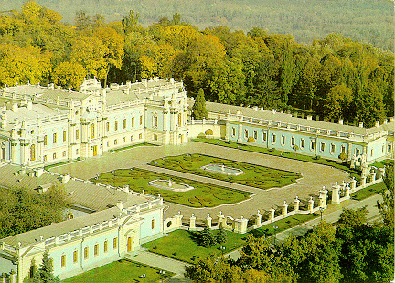
|
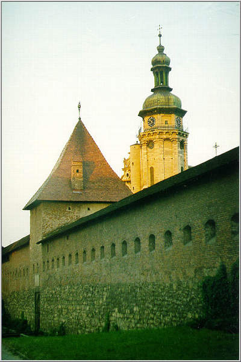 | |
| 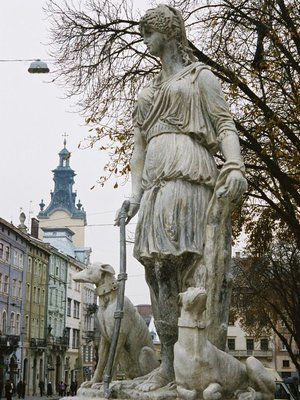 | 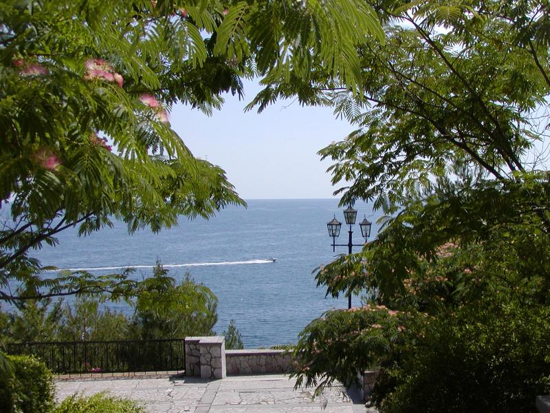 | 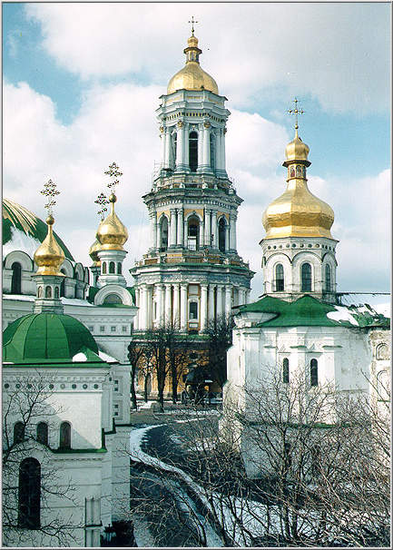 |
Regardless of the political changes of the centuries, Ukraine is still as it was many millenniums ago one of the largest and most beautiful states in Europe. The Ukrainian national emblem is amongst the oldest symbols in Europe. The triden was the first emblem of the Rurik dynasty of the Kievan Rus from the 9th century. It was depicted on coins, royal buildings, weapons, and costumes.
Geographically, Ukraine occupies a central position in Europe (the geographical center of Europe lies near the town of Rakhiv in the Transcarpathian Region of Ukraine). Ukraine's area is 233,088 square miles (603,700 sq. km). It is slightly larger than France. The birthplace of Ukraine was Kievan Rus, one of the most poweful states of medieval Europe, which flourished a thousand years ago. In 988 Prince Volodymyr introduced Christianity as the official state religion. The christening of Kievan Rus took place in Kiev on the bank of the Dnipro River. This move played an important role in Kiev's political development and cultural relations with other European countries.
Ukraine preserves its past. It is interesting to mention that in the 11th century, two monks settled in the hills of the Dnipro River to the south of the city of Kiev, and eventually a cave monastery was established in the area in 1051. Today this monastery is renowned as the Kiev-Pechersk Lavra (Monastery of the Caves). The Lavra's 86 buildings represent eight centuries of art and architecture. It's now partially a museum and partially a functioning monastery.
At the time of Kievan Rus, Kiev, the capital of today's Ukraine, was one of the richest and most developed cities of Europe. The refined skills of Kiev's medieval craftsmen has been repeatedly demonstrated by the vast number of buried treasures found within the territory of the ancient city, and by its many architectural monuments. St Sofia Cathedral, the Golden Gate of Kiev , Kiev-Pechersk Lavra are among the world heritage of human civilization.
Nowadays Ukraine not only boasts of its glorious past and its spectacular nature. The magical voices of Ukrainian singers, ballet artists, the works of Ukrainian painters and sculptors are renown throughout the world. Ukraine is rich in natural resources and has enormous scientific potential. The Dnipro River, with its many tributaries, unifies central Ukraine economically, connecting the Baltic coast countries with the Black Sea and the Mediterranean Sea. The mouth of the Danube River provides an outlet for Ukrainian trade with the Balkans, Austria, and Germany.
| 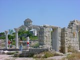 | 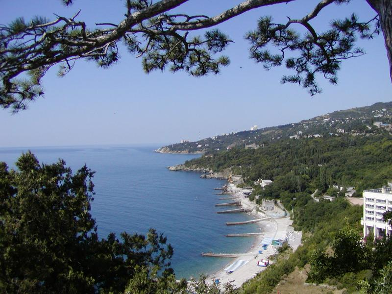 | 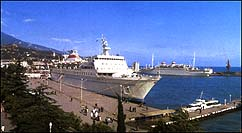 |
| 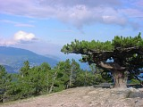 | 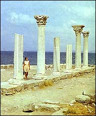 | 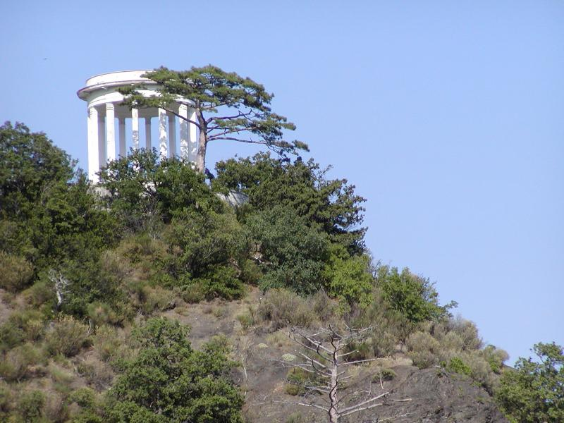 |
No, it is not Greece. This is the Crimea, an independent state within the boundaries of Ukraine. You see ruins of the city of Chersonese Taurica, 5 B.C. Founded in 422-421 B.C., from 5th to 1st c. B.C. Chersonese was a city-state with democratic self-government. During the 1st-4th c. Chersonese became an aristocratic republic under the control of Rome. Since 10th century the history of the city is closely connected with the history of Kievan Rus. In 1299 the city was destroyed by the Tatar-Mongols. You see also Alupka, the mount Ai-Petri, as well as Yalta, the city on the Black Sea known since 12th century. The city is located 79km south of Simferopol, the Crimean capital. The young Mark Twain and the Ukrainian poetess, Lesya Ukrayinka, spent time in Yalta. The city is known to the international community because of the Yalta Conference of February 4-11, 1945, in Livadiya on Mt. Mohabi. The conference was held in the Complex of Palace Structures, built in the Italian Renaissance style with elements of Byzantine, Gothic, and Arabic architecture. Today Yalta is the largest international resort in the Crimea.
With great natural beauty, a rich culture and warm and hospitable people, Ukraine is a wonderful country to visit.
A few concluding words about Kiev
Where the thousand-year-old east-west trade routes crossed the Dnipro river, there arose the city of Kiev, one of the oldest settlements in Europe. It has given Kiev its primacy as the mother of the cities of an ancient European state and at a high cost in treasure and in human lives, it has made Kiev one of the traditional and practical centres of Europe during the period between 9 and 11 centuries.
Kyiv has a long, rich, and often stormy history. Archaeological findings of stone and bone implements, the remains of primitive dwellings built of wood and skins, and large accumulations of mammoths' bones indicate that the first settlements in the vicinity date from the Upper Paleolithic Period (some 15,000 to 40,000 years ago). As early as 3000 BC in the Neolithic Period and subsequently at the time of the Cucuteni-Trypillya culture at the end of the Neolithic, tribes engaged in agriculture and animal husbandry lived on the site of modern Kyiv. The tribes of the area traded with the nomadic peoples of the steppes to the south, Scythians, Sarmatians, and later Khazars, and also with the ancient Greek colonies that were located on the Black Sea coast.
| 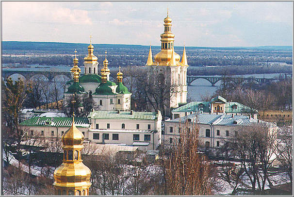 | 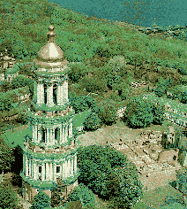 | 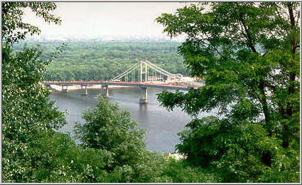 |
| 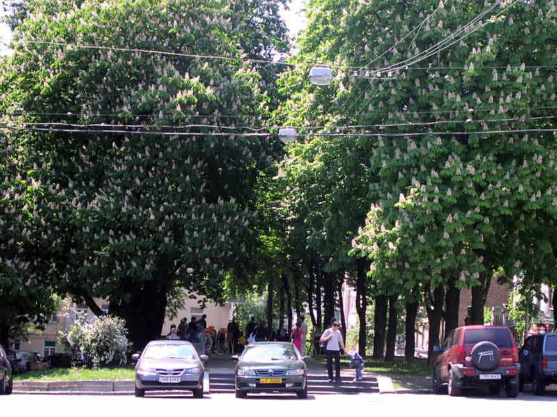 | 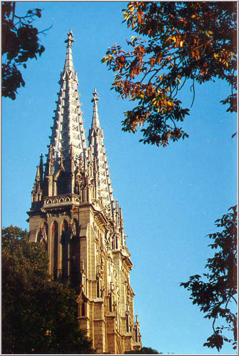 | 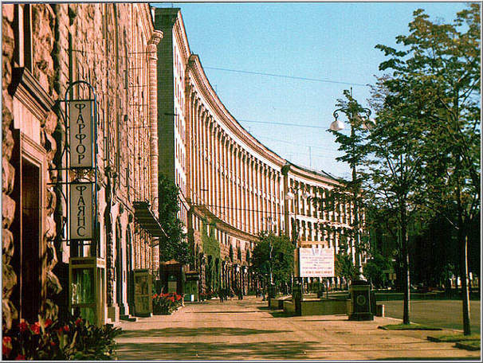 |
There is an old legend which tells us about three brothers and their sister who founded Kiev at the end of the fifth century. The brothers Kiy, Khoriv, and Shchek, along with their sister, Lybid, decided to name this newly founded land "Kyiv", after their elder brother. Kiev was well-known to colonists and traders in the ancient world, including Greeks and Romans. Situated on lucrative trade routes ("from the Varangians to the Greeks"), the city quickly prospered as the center of a powerful European state, Kievan Rus. Kiev bloomed during the end of the ninth century as a political and cultural center in Europe.
Nowadays Kiev has much to offer in the cultural and architectural arenas with its wide tree-lined boulevards and historical buildings reflecting various styles and periods of the ancient Kievan Rus state. Many architectural monuments within the territory of the ancient city still grace the Kiev skyline: St. Sofia Cathedral, the Golden Gate of Kiev , the architectural ensemble of the Kiev-Pechersk Lavra , and many others. The origins of the Kyiv-Pechersk Monastery are closely related to the introduction of Christianity in Kyiv Rus' in the 10-th century. To keep the new religion alive Princes built impressive churches and by all means supported the activity of the first monks who went from place to place teaching the Christian Faith, preaching and settling centers of the worship. The monastery itself was settled in the underground caves on the high bank of river Dnipro during the reign of Prince Yaroslav the Wise (1091-1054). "Caves" in Ukrainian will be "pechery", hence the name of the monastery. During the next ten centuries the Monastery played a significant role in the cultural and religious life of the country and its history was full of interesting events. Many famous people had deep connection to Lavra. Nowadays Lavra is both a collection of unique museums and a functioning monastery.
The major sight-seeings in the city of Kiev and on its outskirts are conveniently connected by the Kiev subway net .
| 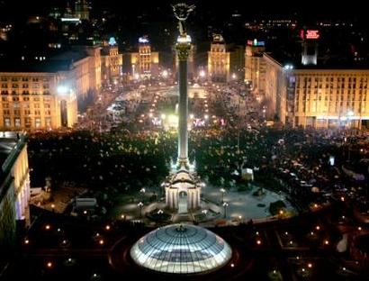 |
Back to M3AI
|
|